09.30.2007 10:27
Upgrading PostGIS to 1.3.1 on fink
I finally figured out how to work
around my upgrade troubles for PostGIS on my old laptop. I did a
"fink selfupdate && fink update-all" that built PostGIS
1.3.1 (was 1.2.?) before. The shared library that contains all the
stored procedures changed minor versions from 1.2 to 1.3, thus the
update script did not work.
% psql sbnms_ais_2006 < /sw/share/doc/postgis82/lwpostgis_upgrade.sql BEGIN CREATE FUNCTION ERROR: could not access file "/sw/lib/postgresql-8.2/liblwgeom.1.2.so": No such file or directory CONTEXT: SQL statement "SELECT postgis_lib_version()" PL/pgSQL function "postgis_major_version_check" line 19 at SQL statement ERROR: current transaction is aborted, commands ignored until end of transactionI then tried to see what the update script was doing. It fails on this simple check:
% psql sbnms_ais_2006 SELECT postgis_lib_version(); ERROR: could not access file "/sw/lib/postgresql-8.2/liblwgeom.1.2.so": No such file or directoryLooking in the shared library directory shows that I am out of luck.
% ls /sw/lib/postgresql-8.2/lib*.so liblwgeom.1.3.so liblwgeom.1.so liblwgeom.soAs the documentation states that a dump/restore is only needed for a major version number change, I decided that the solution was to fake a 1.2 version of the library so that the update script would take. I think it works.
% cd /sw/lib/postgresql-8.2
% sudo ln -s liblwgeom.1.3.so liblwgeom.1.2.so
% psql sbnms_ais_2006 < /sw/share/doc/postgis82/lwpostgis_upgrade.sql
BEGIN
CREATE FUNCTION
postgis_major_version_check
==========================================
Scripts versions checked for upgrade: ok
(1 row)
DROP FUNCTION
CREATE FUNCTION
CREATE FUNCTION
CREATE FUNCTION
...
CREATE FUNCTION
CREATE FUNCTION
COMMIT
% sudo rm liblwgeom.1.2.so
After that, the PostGIS database appears to be happy.
% psql sbnms_ais_2006
sbnms_ais_2006=# SELECT postgis_lib_version();
postgis_lib_version
=====================
1.3.1
sbnms_ais_2006=# select position from position limit 1;
position
====================================================
0020000001000010E6C051A9E53D4DAFFE404539F1F6E12BB8
sbnms_ais_2006=# select AsText(position) from position limit 1;
astext
==========================================
POINT(-70.6546166666667 42.4526966666667)
09.29.2007 13:04
Yard jobs for fall
This morning, I spent a couple hours
working in the yard dealing with the fact that fall is here.
Downtown Dover has yellow lined streets and the yard and garden
needed help. The compost pile is now full way above the top. The
light was bad, hence the blurry picture.
I did my last harvest from the garden for the year. I got about 3-4 pounds of food. I had to go for the mellons as the plants are done for, but although the mellon looks pretty good... it was definetly not ready. Drat. I harvested about 7 jalapeno peppers. I sacrificed two peppers to make an asparagas and jalapeno casadia with mano and peach salsa. Very good. The peppers rate 9 out of 10 for flavor, but 0 out of 10 for heat (as in NONE). I must need to get some sort of greenhouse type setup around the peppers.
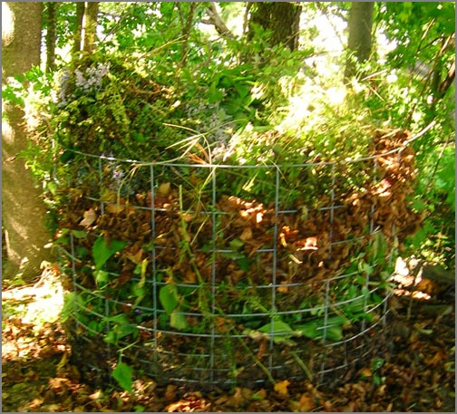
I did my last harvest from the garden for the year. I got about 3-4 pounds of food. I had to go for the mellons as the plants are done for, but although the mellon looks pretty good... it was definetly not ready. Drat. I harvested about 7 jalapeno peppers. I sacrificed two peppers to make an asparagas and jalapeno casadia with mano and peach salsa. Very good. The peppers rate 9 out of 10 for flavor, but 0 out of 10 for heat (as in NONE). I must need to get some sort of greenhouse type setup around the peppers.
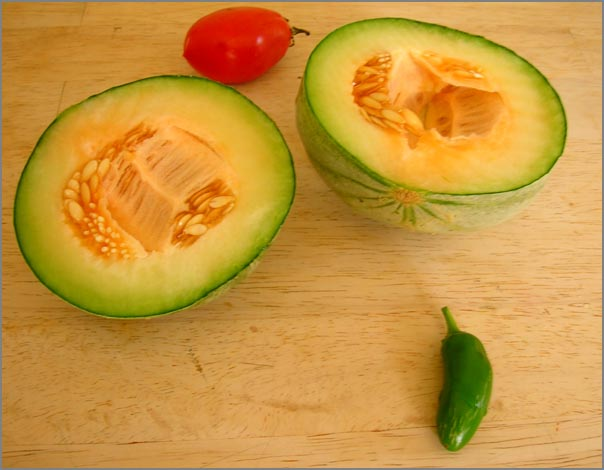
09.28.2007 22:19
Images from a Friday at work
Just some pictures I took while
working today...
There was quite a bit of fog and mist this morning. I would have had the perfect picture of Andy McLeod driving a UNH boat off into the fog, but I left the camera in the car. Doh!
The morning weather felt very much like autumn.
For some reason, I really like this picture. Today the low tide was very low tide and the high tide was lapping water onto peoples yards.
This is the building that houses the computer known as tide3. It will soon be logging AIS in addition to water level.
There was quite a bit of fog and mist this morning. I would have had the perfect picture of Andy McLeod driving a UNH boat off into the fog, but I left the camera in the car. Doh!
The morning weather felt very much like autumn.
For some reason, I really like this picture. Today the low tide was very low tide and the high tide was lapping water onto peoples yards.
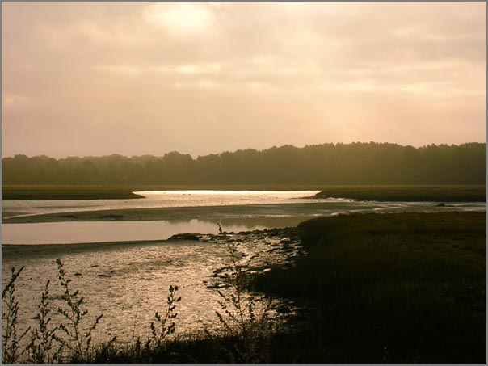
This is the building that houses the computer known as tide3. It will soon be logging AIS in addition to water level.
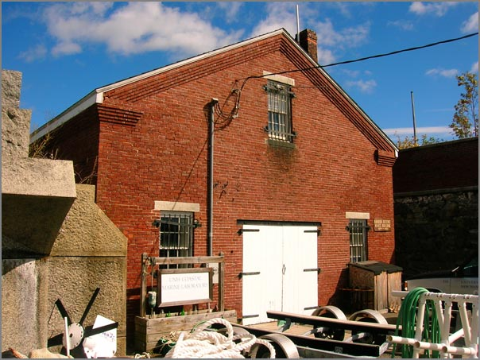
09.28.2007 13:00
Making a python serial logger daemon
I think I've got a basic serial
logger daemon worked out for Ubuntu Linux. My next release of
noaadata should have the actual source files.
"Creating a daemon the Python way" was a big help: http://aspn.activestate.com/ASPN/Cookbook/Python/Recipe/278731
And then I had to do this to get all the links setup:
$ sudo ./logtide start * Starting tide logging server logtide [ OK ] $ ./logtide status * Tide logging server is running. $ sudo ./logtide stop * Stopping tide logging server logtide [ OK ]Finally, an item that has been on my to do list is done. It could use some improvements, but I will not get to it for a while.
"Creating a daemon the Python way" was a big help: http://aspn.activestate.com/ASPN/Cookbook/Python/Recipe/278731
And then I had to do this to get all the links setup:
update-rc.d logtide defaults Adding system startup for /etc/init.d/logtide ... /etc/rc0.d/K20logtide -> ../init.d/logtide /etc/rc1.d/K20logtide -> ../init.d/logtide /etc/rc6.d/K20logtide -> ../init.d/logtide /etc/rc2.d/S20logtide -> ../init.d/logtide /etc/rc3.d/S20logtide -> ../init.d/logtide /etc/rc4.d/S20logtide -> ../init.d/logtide /etc/rc5.d/S20logtide -> ../init.d/logtide
09.28.2007 07:12
Fall in Dover
The leaves are only starting to
change in Dover, but with a bit of rain last night (finally), I
have a yard full of leaves to rake and get into the compost
bin.
Now it is off to New Castle to install another computer for datalogging tide and AIS.
Now it is off to New Castle to install another computer for datalogging tide and AIS.
09.25.2007 07:28
Schematron over XSD
From my experience, I have to say
that it would not be difficult to have a better language than XSD
schemas. They are challenging at best. I really need to check out
the competition soon so that I can create a new schema for AIS
binary messages that is as easy to use as possible.
Converting XML Schemas to Schematron (#1)
... Actually, the difficulty has been in an unexpected direction. XML Schemas is so unpleasant to work with, that one programmer asked to be take off the project because it was simply too much to cope with, and another has left the company (to take up an overseas appointment) but not before also getting frustrated, boggled and bogged down by XSD! Things like complex type with simple content derived by extension from a simple type with simple content etc become a maze or ratnest. ... It is interesting that in all the last almost eight years of Schematron, I don't recall anyone complaining it was too difficult. ...
09.24.2007 03:23
White Mountains fall colors
I was able to make a quick drive up
to Conway and then took highway 112 up to the pass and back. The
fall colors are definitely getting started. There are some stands
that are in full swing.
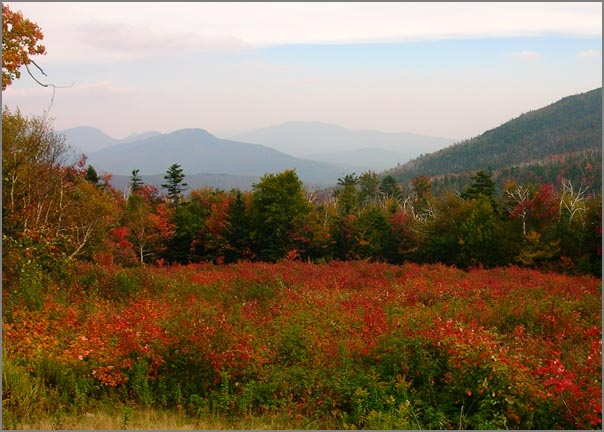
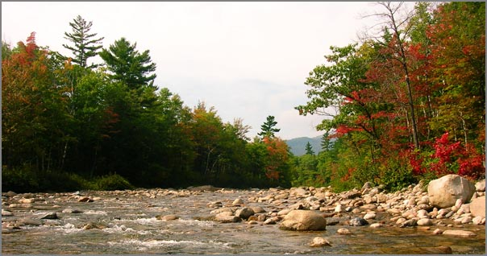
09.20.2007 16:51
SFProspector
Andy Millan pointed me to a cool site
that shows off what the City of San Franciso has done. Wish my city
had something like this!
http://www.sfprospector.com/
http://www.sfprospector.com/
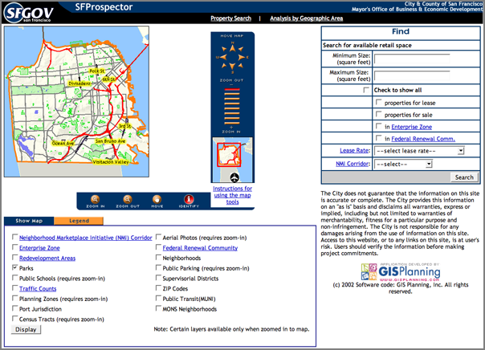
09.20.2007 09:53
magicdate-py in fink
After using magicdate for
just a few minutes, I like it! I decided to add it to fink. For
people handling time series data, this makes life much better.
>>> from optparse import OptionParser
>>> import magicdate
>>> parser = OptionParser(option_class=magicdate.MagicDateOption)
>>> parser.add_option('-s', '--start', dest='start', type='magicdate', default=None)
>>> parser.add_option('-e', '--end', dest='end', type='magicdate', default='today')
I'm trying to create a "kml_countdown_placemark.py" program. I need
to be able to specify when it starts, so magicdate is the clear
choice.
...
if __name__ == '__main__':
from optparse import OptionParser
import magicdate
parser = OptionParser(usage="%prog [options] [file1] [file2] ...",
version="%prog "+__version__
+' ('+__date__
+')',option_class=magicdate.MagicDateOption)
parser.add_option('--start-time',dest='start',type='magicdate',default=None,help='magicdate')
parser.add_option('--time-offset',dest='timeOffset',default=0
, type='int'
,help=' Move date to a time within a day [default: %default m ]')
# More options here
(options,args) = parser.parse_args()
import datetime
start = datetime.datetime(options.start.year,options.start.month,options.start.day)+datetime.timedelta(seconds=60*options.timeOffset)
# Lots of code follows
Look for it in the next noaadata-py release.09.20.2007 09:35
New England Blue Whale
Thanks to Kiley for sending this on
to me.
nnsnews.com:
Image released by the Blue Ocean Society
nnsnews.com:
New Hampshire whale watchers enjoyed a special Tuesday (9/19) when a rare giant blue whale was spotted off the coast. The whale has now been seen twice, only 12 miles off shore. The first sighting came Sunday (9/16). It is the first time since 2002 that a giant blue whale has been seen in the area.
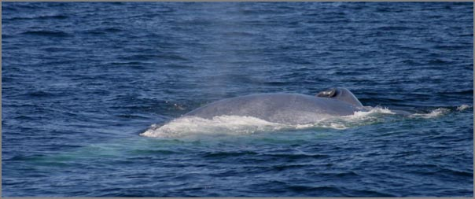
Image released by the Blue Ocean Society
09.20.2007 08:32
MSML - the Maritime Safety Markup Language
The USCG RDC just pointed me to the
Maritime Safety Markup Language
(MSML). Turns out that MSML is an ISO standard that was passed in
2005:
ISO/PAS 22853:2005
ISO 22853:2005 specifies the XML application MSML (Maritime Safety Markup Language). MSML is a language for structuring information and the goal is to create an open standard that can be used generally in the maritime sector. MSML is implemented using XML Schema, which is contained in a separate document that could be used at validation. The first purpose of MSML is to make it possible to record safety related information in relation to repair and maintenance. The second purpose is to define an extensible structure that could be developed in future versions of MSML. Note that MSML should not primarily be seen as a support for normal work onboard. Instead, it is an add-on support for transfers of safety related information to/from the vessel.I haven't had time to read through this or figure out how it relates to AIS and the MDA COI DMWG work in the US (e.g. Strategic MDA by Tollefson).
09.18.2007 19:57
Troubles with Textures (in Google Earth)
Update: My new laptop with a
NVIDEO GeoForce 8600M GT and 256 MB of VRAM reports that it will
handle textures of 8192x8292. Bigger is better. My 4xG5 with a
GeForce 6600 with 256MB of VRAM will do 4096x4096. The NVIDIA
drivers are substantially different version numbers, so perhaps
this is more a driver issue rather than VRAM.
Ouch. Whack me up side the head now. I loaded up my kmz on my old laptop and quickly realized that I desperately need to transition to my new Macbook Pro. My PowerBook G4 has an ATI Mobility Radeon 9700 with 64MB of VRAM. My model is a 4kx4k raster nautical chart (RNC). On my desktop, I get 4kx4k textures in Google Earth (GE), but not on the old trusty laptop. GE reports allowing only 1kx1k textures and I don't think I am getting anywhere near that. It would be nice if GE tiled the image for me and I don't have the time to code that up or pass the image through a tool that can do the tiling for me. Sigh.
It looks better if I take off my glasses!
Ouch. Whack me up side the head now. I loaded up my kmz on my old laptop and quickly realized that I desperately need to transition to my new Macbook Pro. My PowerBook G4 has an ATI Mobility Radeon 9700 with 64MB of VRAM. My model is a 4kx4k raster nautical chart (RNC). On my desktop, I get 4kx4k textures in Google Earth (GE), but not on the old trusty laptop. GE reports allowing only 1kx1k textures and I don't think I am getting anywhere near that. It would be nice if GE tiled the image for me and I don't have the time to code that up or pass the image through a tool that can do the tiling for me. Sigh.
It looks better if I take off my glasses!
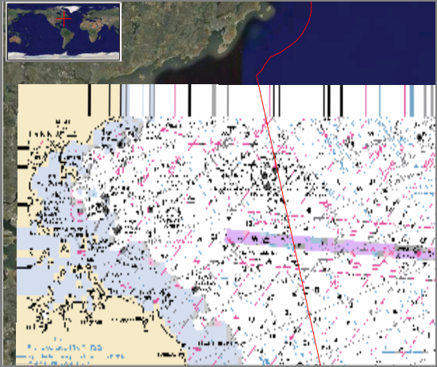
09.18.2007 10:52
NOAA updates - Google, Puget Sound joint center with USCG
On the NOAA update front:
The Office of Response and Restoration (O&R) Emergency Response Division represented NOAA at the Puget Sound Joint Harbor Operations Center (JHOC) ribbon cutting ceremony. The Puget Sound JHOC is the fourth such facility established by the U.S. Coast Guard and U.S. Navy in the Nation, pursuant to the Safe Port Act of 2006 goal to increase interoperability amongst all key Federal, State, and local marine stakeholders. The JHOC ribbon cutting ceremony represents the culmination of efforts of the federal Department of Defense and Department of Homeland Security, as well as other Federal, State, and local agencies to increase collaboration and cooperation in the pursuit of our collective port safety and security goals within Puget Sound. Covering an area of over 3,500 square miles, the Puget Sound JHOC will leverage technology, including sensor, detection, communication, and decision-making systems, in order to more swiftly and accurately detect, assess, warn, defend, and recover from security threats. For more information, contact Ruth Yenderand
Many NOAA organizations are working hard to deliver and display to end users, environmental data in an integrated and timely manner using easy to use and intuitive visualization tools. Several geospatial software products from Google have rapidly become industry standards for displaying and viewing earth images through the Internet. Earlier this year the NOAA Geographical Information Systems (GIS) Committee together with my staff undertook an effort to develop a NOAA-wide Google Earth and Maps enterprise software license in order to reduce the cost, increase the availability, and improve the management of NOAA's geospatial software. The Google license agreement is now in place and will be the only vehicle for acquiring Google geospatial software in NOAA.No word if that includes SketchUp Pro.
09.18.2007 08:11
CS767 Lecture 04 on the web site
I've got the 4th class up on the web:
Lecture 04. I'm still trying to figure out what license to put
on this content. Something like a creative commons free for
non-commercial license. Suggestions?
Dropping a data plot into the world (or at least my little corner of it).
The joy (or un-joy) of projections and datums. This is placing a gnuplot graphic on the globe. I'm trying to make a point here with a raster. The Atari 2600 retro look is an unintended (but kind of cool) side effect.
This is a PowerPoint job with the inset coming from another view where I flew into the polygon. Shows that the correct color is inside the polygon.
Dropping a data plot into the world (or at least my little corner of it).
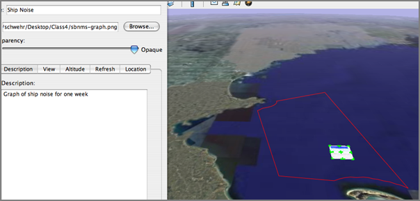
The joy (or un-joy) of projections and datums. This is placing a gnuplot graphic on the globe. I'm trying to make a point here with a raster. The Atari 2600 retro look is an unintended (but kind of cool) side effect.
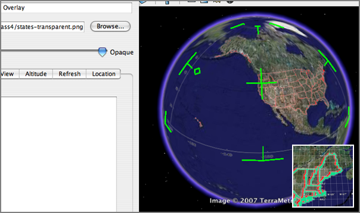
This is a PowerPoint job with the inset coming from another view where I flew into the polygon. Shows that the correct color is inside the polygon.
right-hand rule - yes left-hand rule - noAnd in the Google Earth graphics model, Z is up as it should be...
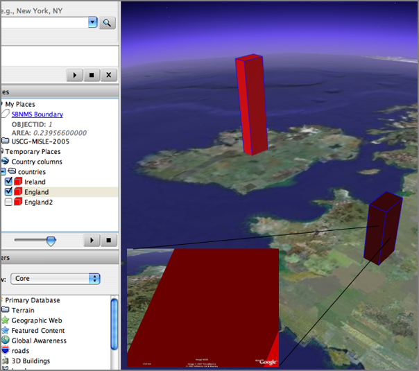
09.17.2007 10:55
CS 767 class time change
The class time has been shifted to
1:00-2:20 MW to smooth out scheduling issues.
09.17.2007 08:57
Google Earth photo object
I finally got around to trying the
photo object in Google Earth. Works, but it takes a bit of
tweaking.
Once you add an image, you can double click on it and enter the "photo" mode.
Use the scroll wheel to zoom in and pan around.
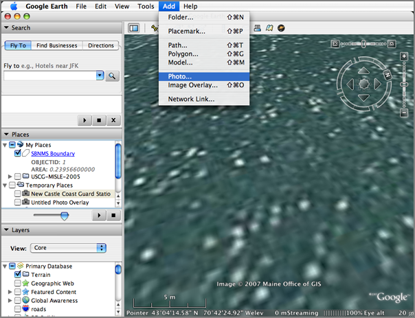
Once you add an image, you can double click on it and enter the "photo" mode.
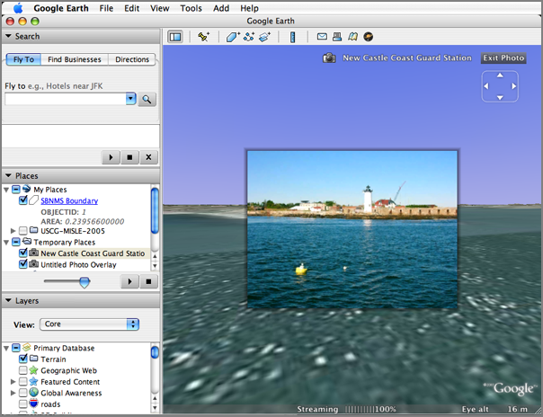
Use the scroll wheel to zoom in and pan around.
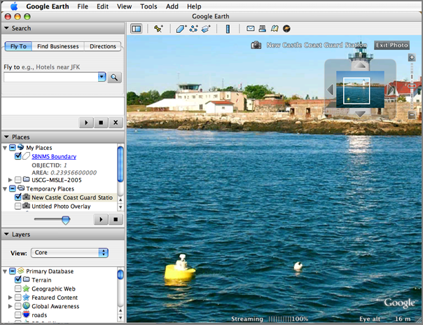
09.17.2007 05:52
Blogging from a sailboat
This blog is from a sailboat, but not
about maritime topics... featured on Wired News.
condorblog
sailboat blogger
condorblog
sailboat blogger
... Yes, I blog from a sailboat and cruise the azure waters of the Sea of Cortez and the Pacific Ocean off the west coast of Mexico. "Call me Slogger," to borrow from the opening line of that saga of the sea, Moby Dick. ...
09.16.2007 09:01
State Boundaries
I need to have a decent
representation of the boundaries of the 50 states. I had trouble
finding what I wanted. Eventually, I broke down and wrote some code
to cope with what I found from the US Census.
http://www.census.gov/geo/cob/bdy/st/st00ascii/st99_d00_ascii.zip
The source files look like Arc ascii export formats. st99_d00a.dat is a lookup table saying for what state a polygon is associated.
http://www.census.gov/geo/cob/bdy/st/st00ascii/st99_d00_ascii.zip
The source files look like Arc ascii export formats. st99_d00a.dat is a lookup table saying for what state a polygon is associated.
1 "02" "Alaska" "01" " " 2 "02" "Alaska" "01" " " ...Then st99_d00.dat contains the polygons:
1 -0.152594121361715E+03 0.650971279135803E+02
-0.147787110884357E+03 0.702453634941157E+02
-0.147765104000000E+03 0.702198060000000E+02
-0.147681722000000E+03 0.701999540000000E+02
-0.147648000000000E+03 0.702032990000000E+02
-0.147585678000000E+03 0.702033980000000E+02
-0.147505270000000E+03 0.702003840000000E+02
...
-0.147789357000000E+03 0.702479720000000E+02
-0.147787110884357E+03 0.702453634941157E+02
END
2 -0.166124169422343E+03 0.662409026111111E+02
-0.166053153000000E+03 0.662649440000000E+02
-0.166031870000000E+03 0.662646390000000E+02
...
I then created a python program that reads these two files and
fills a directory full of these polygons.
#!/usr/bin/env python
#
# Build LUT for what state each e00 entry is
#
states={}
for line in file('st99_d00a.dat'):
line = line.strip()
if len(line)<1: continue
if line[0].isdigit():
stateNum=int(line)
if line[0]=='"' and line[1].isupper():
state=line.strip()[1:-1]
states[stateNum]=state
stateNum=None
#
# Write out a file for each poly that we find in the file
#
polyNum=None
o=None
for line in file('st99_d00.dat'):
fields=line.split()
if not polyNum:
if len(fields)==3:
polyNum=int(fields[0])
# This first coordinate must just be a point inside polygon
count=0
#print '#',states[polyNum]
numStr=(('%03d' % polyNum))
o = file(numStr+'-'+states[polyNum]+'.dat','w')
o.write( '#'+states[polyNum]+'\n')
continue
if len(fields)==1:
assert line.strip()=='END'
polyNum=None
o.write('\n')
o.close()
o=None
continue
if len(fields)==2:
count+=1
if count%2==0:
#print line,
o.write(line)
That gives me a all the polygons as separate files. With gnuplot, I
went though and found the key polygon(s) for each state. Places
like Hawaii Michigan deserve more than one polygon to look
reasonable. The script also reduces the vertex count by half with
an algorithm that is not so smart. After picking all the files that
I want, I used 'cat' to mush them all together in one big file:
wc -l states.gp.dat 67042 states.gp.datThen to take a look at the results. Not to shabby.
gnuplot set term gif set output 'states.gif' plot 'states.gp.dat' with l
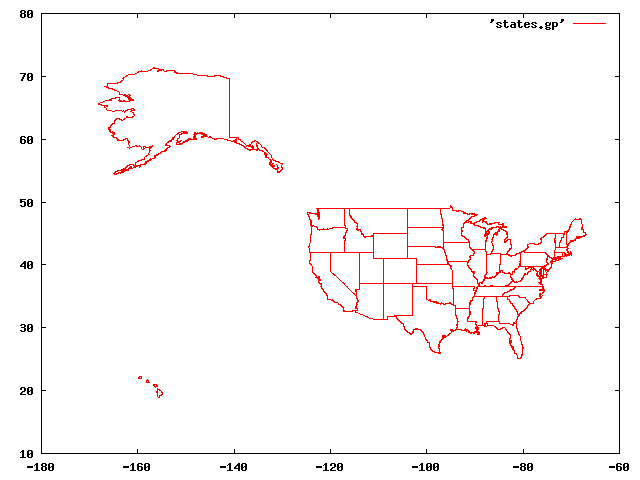
09.15.2007 15:43
operation pesto
Operation pesto has now consumed 2
and a half pesto plants. The remaining 1 and a half plants are in
my sights. I've now made three batches of pesto. The lemon basil,
with its little leaves, is a lot more work, and I was not as happy
with the results. We shall see what the taste testers tomorrow
think of it.
Here is the sweet basil just after coming out of the garden.
Then the stripping began...
Pesto just wouldn't be the same without toasted pine nuts. Ummm... many of them didn't make it to the pesto and were casualties of the cook.
Then after all the rain that we got this morning, the sun decided to come out just as I finished cleaning the kitchen. Nice timing!
I love the rich colors on this type of sunflower.
And the beans just keep growing!
Here is the sweet basil just after coming out of the garden.
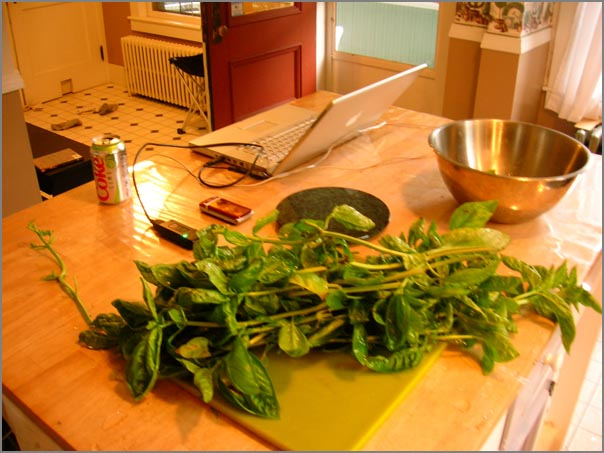
Then the stripping began...
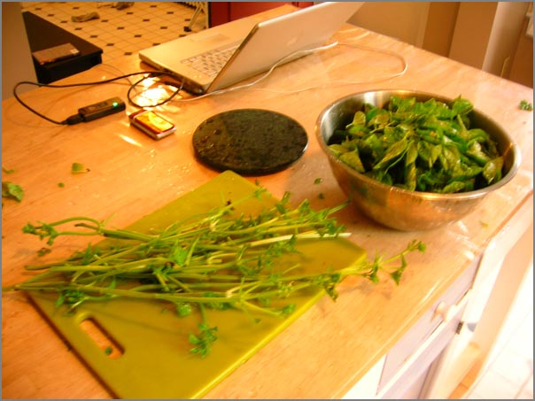
Pesto just wouldn't be the same without toasted pine nuts. Ummm... many of them didn't make it to the pesto and were casualties of the cook.
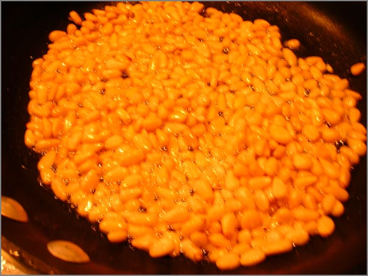
Then after all the rain that we got this morning, the sun decided to come out just as I finished cleaning the kitchen. Nice timing!
I love the rich colors on this type of sunflower.
And the beans just keep growing!
09.15.2007 10:58
Adding date range selection to ais gridding
Often I have trouble thinking in
terms of SQL queries. It took me far longer than it should have to
craft this query. Leila requested gridding of date ranges. That
makes sense and up until now, I always gridded tracks for the whole
time range and my original import of data constrained the time.
That is fine for one or two little projects, but stops me from
being able to do things like month to month plots without
generating an entire pile of databases in PostgresSQL. Right now,
this just constrains the start of the track. It will be trickier to
clip lines with time. I will have to regenerate the lines perhaps
in a temporary view.
Update: I don't have comments on my blog, but I do get emails. Rob De Ameida (the guy responsible for creating pyDAP) dropped me a line that I want to add here. When I have live feeds running, this kind of suggestion would be perfect for a cronjob that asked to make a plot of "yesterday". I was thinking that I would have to code that up. Not hard but many little easy things can quickly add up to an overload.
SELECT AsText(Transform(track,32619))
FROM
tpath
,(SELECT userid FROM summary2006 WHERE catagory='tanker') AS ships
,(SELECT id
FROM position,transit
WHERE startpos=key
AND cg_timestamp > '2006-05-06'
AND cg_timestamp < '2006-05-07'
) AS track_id
WHERE ships.userid=tpath.userid AND tpath.id=tracks_id.id;
I added three options to ais_pg_grid. The dry-run prints out the
SQL query and quits.
--dry-run Print the SQL query and quit.
--start-date=STARTDATE
Restrict query to begin at this date [default: None]
--end-date=ENDDATE Restrict date to not extent to more recent than this
date [default: None]
Update: I don't have comments on my blog, but I do get emails. Rob De Ameida (the guy responsible for creating pyDAP) dropped me a line that I want to add here. When I have live feeds running, this kind of suggestion would be perfect for a cronjob that asked to make a plot of "yesterday". I was thinking that I would have to code that up. Not hard but many little easy things can quickly add up to an overload.
Just a small comment about your post on date range selection. I've written a small Python module called magicdate: . http://cheeseshop.python.org/pypi/magicdate . If you use optparse to parse the options in your ais_pg_grid you can use magicdate to specify dates such as "today", "last wed", "march 23" (as well as more common ones like "2007-01-01") on the command line. Silly, but handy.Thanks Rob!
09.14.2007 14:38
Me out on the R/V Cocheco
Most of the photos on my blog from
work I do are taken by me. Therefor, I don't have a lot of myself.
Thanks to Michelle for giving me these two pics from yesterday's
research cruise.
09.14.2007 09:12
EPA select Microsoft Virtual Earth Platform
Looks like the EPA has chosen a
platform specific option. I would have much prefered if they had
chosen something that ran on at least Windows, Mac, and
Linux.
EPA Selects Microsoft Virtual Earth Platform for Geospatial Mission [microsoft.com]
EPA pursues unique Software plus Services approach to improve data sharing and provide enhanced business intelligence capabilities for government customers.
EPA Selects Microsoft Virtual Earth Platform for Geospatial Mission [microsoft.com]
EPA pursues unique Software plus Services approach to improve data sharing and provide enhanced business intelligence capabilities for government customers.
The U.S. Environmental Protection Agency (EPA) has licensed the Microsoft Virtual Earth platform on which to develop its mission-critical geospatial and mapping applications. The commitment to Virtual Earth will improve data sharing, analysis and insight for partner agencies, citizens and nongovernmental organizations (NGOs) on topics ranging from superfund sites and oil spills to waterways and the quality of beach water. . EPA sought an easy-to-use solution that includes maps and imagery that can be integrated into its numerous line-of-business applications, such as Web-based mapping applications, and environmental monitoring systems to better serve EPA programs. . Virtual Earth provides an accurate digital representation of the Earth. Agencies and other organizations can layer their unique data on top of Virtual Earth, allowing them to focus on their core missions instead of creating base map data. Virtual Earth is the only existing platform that offers developers and end users the ability to work with and view satellite, aerial, oblique and 3-D imagery of the Earth. . Previously, when the EPA sought to develop geospatial applications, the agency bought imagery from disparate sources to combine it with agency maps, often an intensely time-consuming and costly process. Virtual Earth provides not only three-dimensional city models and satellite and aerial imagery but bird's-eye imagery, which gives users a unique 45-degree-angle perspective, a feature found only in Virtual Earth. Combined, these models and imagery allow agencies to build applications that layer business data directly over Virtual Earth imagery that is kept current by Microsoft Corp. For example, using Virtual Earth, the EPA is designing a Web-based mapping tool for anyone to access information on beach and water quality.
09.14.2007 07:30
Bailey
This was a rough week. I had to give
up Bailey to my ex-wife. Sarah got Bailey in the divorce. It's hard
being in the house and expecting to have him following me around
everywhere. He never had me out of sight for long.
Bailey hanging out in the kitchen while I was cooking.
Playing hide and seek out the window at night.
Cats, they sleep a lot.
Bailey hanging out in the kitchen while I was cooking.
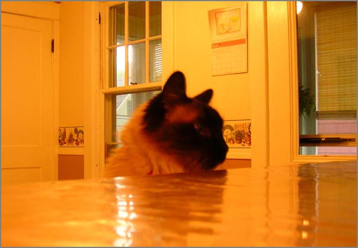
Playing hide and seek out the window at night.
Cats, they sleep a lot.
09.13.2007 19:51
Lemon Basil Pesto
I just sacrificed my Lemon Basil
plant to make a batch of pesto. It is pretty good, but strange. I'm
going to make a batch or two with the sweet basil. That should be
less shocking than the lemon.
09.13.2007 16:41
A day at sea - acoustic tests
Today was only my second day this
year at sea on a research vessel. Sad, but true. Ben, Michelle,
Tom, and I took the R/V Cocheco out and deployed an acoustics test
off of the light house at the US Coast Guard station. I really
enjoyed driving the ship for an hour or two during the transits
between JEL and the field site.
The R/V Cocheco was looking good this morning at the dock for our 7 AM departure.
Michelle and Tom did some quick electronics work while Ben and I watched the "Pit Bull" tug bring a second barge into the new UNH pier that is under construction. Two tugs did an amazing job of getting that barge into a space that should have been too small.
Chief scientist Michelle on the oscilloscope making sure that the deployed instrument was doing its job.
While the acoustics test was running, we headed over next to Fort Foster to scope out future deployment sites.
The R/V Cocheco was looking good this morning at the dock for our 7 AM departure.
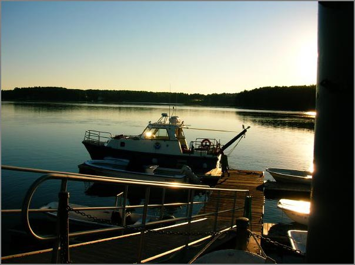
Michelle and Tom did some quick electronics work while Ben and I watched the "Pit Bull" tug bring a second barge into the new UNH pier that is under construction. Two tugs did an amazing job of getting that barge into a space that should have been too small.
Chief scientist Michelle on the oscilloscope making sure that the deployed instrument was doing its job.
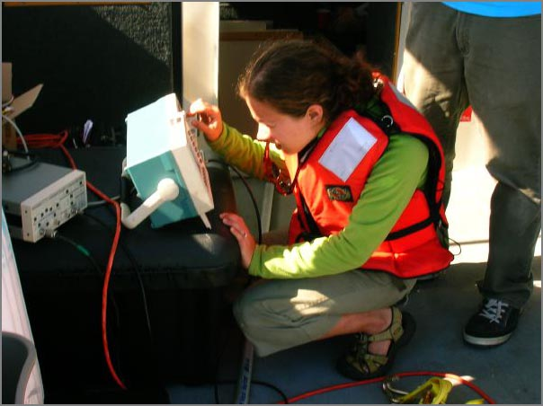
While the acoustics test was running, we headed over next to Fort Foster to scope out future deployment sites.
09.11.2007 18:25
more evdo
So the EVDO works fine in downtown
Dover with 3 bars. With the 2nd USB port in use, I have not gotten
any more of the error 913/USB detach failures.
The interface that verizon provides is easy to use, but how do I set it up to automatically just go for the network? Would be nice to have an optional menu bar widget to control this ranther than a big-ol-app.
This interface controls to which network I am attached. If 802.11 networks are around, they show up here too.
It does give me a sense of how much network traffic I am generating so that I can see how close to 5 GB I am getting.
the statistics page tells me a bit about my current connection.
The router and IP seem to change all the time. That is all I have for now.
ifconfig ppp0
ppp0: flags=8051<UP,POINTOPOINT,RUNNING,MULTICAST> mtu 1500
inet 75.194.208.185 --> 66.174.20.4 netmask 0xff000000
ping works...
sudo tcpdump -i ppp0 host vislab-ccom.unh.edu 18:04:58.254455 IP vislab-ccom.unh.edu > 185.sub-75-194-208.myvzw.com: icmp 64: echo request seq 2 18:04:58.254521 IP 185.sub-75-194-208.myvzw.com > vislab-ccom.unh.edu: icmp 64: echo reply seq 2ping stats:
14 packets transmitted, 14 packets received, 0% packet loss round-trip min/avg/max/stddev = 59.036/78.931/84.076/5.875 msBut ssh does not... visualize empty space: The System Preferences "Network" pane sees it as a "Novatel Wireless CDMA," but the packaging says "Qualcomm 3G CDMA". Then it says
NationalAccess - BroadbandAccess is connected to #777. You are connected to the internet via Nationalaccess - BroadbandAccess.What does that mean?
The interface that verizon provides is easy to use, but how do I set it up to automatically just go for the network? Would be nice to have an optional menu bar widget to control this ranther than a big-ol-app.
This interface controls to which network I am attached. If 802.11 networks are around, they show up here too.
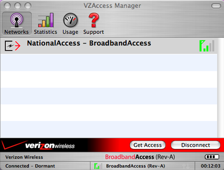
It does give me a sense of how much network traffic I am generating so that I can see how close to 5 GB I am getting.
the statistics page tells me a bit about my current connection.
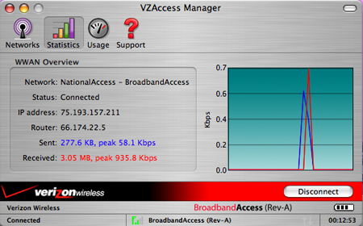
The router and IP seem to change all the time. That is all I have for now.
09.11.2007 10:11
Congressional Research Report - Oil Spills
RL33705 [opencrs.cdt.org] Oil Spills in U.S. Coastal Waters: Background, Governance, and Issues for Congress
Summary: During the past two decades, while U.S. oil imports and consumption have steadily risen, oil spill incidents and the volume of oil spilled have not followed a similar course. In general, the annual number and volume of oil spills have shown declines -- in some cases, dramatic declines. The 1989 Exxon Valdez spill in Alaskan waters played a large role in stimulating actions that contributed to this trend, particularly the decrease in the annual spill volumes. The Exxon Valdez spill highlighted the need for stronger legislation, inflamed public sentiment, and spurred Congress to enact comprehensive oil spill legislation, resulting in the Oil Pollution Act of 1990 (P.L. 101-380). This law expanded and clarified the authority of the federal government and created new oil spill prevention and preparedness requirements. Moreover, the 1990 legislation strengthened existing liability provisions, providing a greater deterrent against spills. After 1990, spill volume from oil tankers, the vessels that carry and have spilled the most oil, decreased significantly. Considering that U.S. oil consumption and oil imports have steadily increased, the trend of declining spill incidents and volume in past years is noteworthy. Yet, recent annual data indicate that the overall decline of annual spill events may have stopped. Both consumption and imports are projected to maintain upward movement, and the United States is expected to increase the proportion of its imported oil. More oil-carrying vessels will be entering U.S. waters, and a higher percentage of transported oil will likely travel by vessel. The threat of oil spills may increase if more oil is being transported into and around the nation. This increased threat raises the question of whether U.S. officials have the necessary resources at hand to respond to a major spill. There is some concern that the favorable U.S. spill record has resulted in a loss of experienced personnel, capable of responding quickly and effectively to a major oil spill. Moreover, the level of funding required to respond to such a spill, particularly its aftermath, may be currently inadequate, according to U.S. Coast Guard reports. No oil spill is entirely benign. Even a relatively minor spill, depending on the timing and location, can cause significant harm to individual organisms and entire populations. Marine mammals and bottom-dwelling species are especially vulnerable to a nearby spill. However, the effects of oil spills can vary greatly. Oil spills can cause impacts over a range of time scales, from only a few days to several years, or even decades in some cases. This report reviews the history and trends of oil spills in the United States, and identifies the legal authorities governing oil spill prevention, response, and cleanup.http://opencrs.cdt.org/rpts/RL33705_20070823.pdf
09.11.2007 07:14
verizon evdo data service
NOTE: More to come as I get
used to working with this service.
I've now had EVDO service from Verizon for a whopping 12 hours now. Somehow I both love it and hate it at the same time. The unlimited package sounds good, but if you use more than 5GB per month, they say they will cancel your contract. Not really unlimited. As a tech professional, I can do that without blinking an eye or doing anything particularly interesting. Assuming that I could get 1 Mb service (I'm seeing about half that), about 11 hours would put me over the monthly quota. There will be no download of big disk images or data files via this service or much in the way of Google Earth flying.
I've had a couple disconnect issues with the USB720 EVDO device. Something about error 913. Hmm. I guess I need to get an extension cord for USB so that I can get power to the device from both USB ports. For this, it is a bummer that the macs have one USB port on either side of the keyboard. The cable from Verizon is not long enough (just 3-4 inches) to reach the other port.
There is much good about this service. Ping times around around 100ms from my house to my work server about 10 miles away. The best part is ssh work and that is a pretty consistent time and typing on the server is just fine for a touch typist. IRC works. Yahoo and AIM work well.
Everything feels pretty spunky. They must have a quick DNS server on the wireless network. It feels much faster for web browsing than over Verizon DSL.
NTP seems to work, but not that well. I see the packets coming into the computer by watching the network interface with tcpdump -i ppp0
I've now had EVDO service from Verizon for a whopping 12 hours now. Somehow I both love it and hate it at the same time. The unlimited package sounds good, but if you use more than 5GB per month, they say they will cancel your contract. Not really unlimited. As a tech professional, I can do that without blinking an eye or doing anything particularly interesting. Assuming that I could get 1 Mb service (I'm seeing about half that), about 11 hours would put me over the monthly quota. There will be no download of big disk images or data files via this service or much in the way of Google Earth flying.
I've had a couple disconnect issues with the USB720 EVDO device. Something about error 913. Hmm. I guess I need to get an extension cord for USB so that I can get power to the device from both USB ports. For this, it is a bummer that the macs have one USB port on either side of the keyboard. The cable from Verizon is not long enough (just 3-4 inches) to reach the other port.
There is much good about this service. Ping times around around 100ms from my house to my work server about 10 miles away. The best part is ssh work and that is a pretty consistent time and typing on the server is just fine for a touch typist. IRC works. Yahoo and AIM work well.
Everything feels pretty spunky. They must have a quick DNS server on the wireless network. It feels much faster for web browsing than over Verizon DSL.
NTP seems to work, but not that well. I see the packets coming into the computer by watching the network interface with tcpdump -i ppp0
07:11:05.626982 IP 246.sub-75-193-34.myvzw.com.ntp > 38.99.80.156.ntp: NTPv4 client, strat 3, poll 6, prec -18 07:11:05.790574 IP 38.99.80.156.ntp > 246.sub-75-193-34.myvzw.com.ntp: NTPv4 server, strat 2, poll 6, prec -19 07:11:13.626148 IP 246.sub-75-193-34.myvzw.com.ntp > astoria.ccjclearline.com.ntp: NTPv4 client, strat 3, poll 6, prec -18 07:11:13.626297 IP 246.sub-75-193-34.myvzw.com.ntp > s0106000ae61de0db.wp.shawcable.net.ntp: NTPv4 client, strat 3, poll 6, prec -18 07:11:13.743254 IP astoria.ccjclearline.com.ntp > 246.sub-75-193-34.myvzw.com.ntp: NTPv4 server, strat 2, poll 6, prec -20 07:11:13.873270 IP s0106000ae61de0db.wp.shawcable.net.ntp > 246.sub-75-193-34.myvzw.com.ntp: NTPv3 server, strat 4, poll 6, prec -6 07:11:14.626034 IP 246.sub-75-193-34.myvzw.com.ntp > dworley.hsd1.ma.comcast.net.ntp: NTPv4 client, strat 3, poll 6, prec -18 07:11:14.714244 IP dworley.hsd1.ma.comcast.net.ntp > 246.sub-75-193-34.myvzw.com.ntp: NTPv4 server, strat 2, poll 6, prec -17 07:11:15.625947 IP 246.sub-75-193-34.myvzw.com.ntp > c-24-99-198-56.hsd1.ga.comcast.net.ntp: NTPv4 client, strat 3, poll 6, prec -18 07:11:15.742216 IP c-24-99-198-56.hsd1.ga.comcast.net.ntp > 246.sub-75-193-34.myvzw.com.ntp: NTPv4 server, strat 2, poll 6, prec -20It took about 15 minutes for ntp to get itself setup, but then when I checked back later, it was back to trying to figure out the time servers. This looks okay accept for the first 3 servers.
ntpq -p -n
remote refid st t when poll reach delay offset jitter
==============================================================================
24.113.37.65 208.201.242.2 3 u 792 68m 1 175.081 -139.85 0.004
24.6.113.157 209.81.9.7 2 u 789 68m 1 427.540 -288.45 0.004
64.34.177.148 209.81.9.7 2 u 789 68m 1 87.062 -140.66 0.004
*24.99.198.56 192.168.3.19 2 u 21 64 377 116.986 -142.03 7.947
-8.15.10.42 132.163.4.102 2 u 19 64 377 86.039 -129.46 4.650
+38.99.80.156 209.81.9.7 2 u 8 64 377 179.685 -141.94 2.715
-24.34.79.42 129.6.15.28 2 u 10 64 377 104.705 -135.36 3.697
-64.235.106.9 128.233.150.93 2 u 9 64 377 129.718 -145.77 6.177
-24.79.79.83 207.61.229.70 4 u 14 64 377 194.477 -146.78 7.466
+24.57.67.214 69.20.226.105 3 u 18 64 377 133.036 -141.75 4.571
But then a couple minutes later, what happened?
ntpq -p -n
remote refid st t when poll reach delay offset jitter
==============================================================================
24.113.37.65 208.201.242.2 3 u 235 68m 1 168.033 -2.610 0.004
24.6.113.157 209.81.9.7 2 u 239 68m 1 1250.52 -545.74 0.004
64.34.177.148 209.81.9.7 2 u 234 68m 1 95.519 7.780 0.004
24.99.198.56 192.168.3.19 2 u 33 64 17 112.627 36.727 17.335
8.15.10.42 132.163.4.102 2 u 42 64 17 106.708 60.707 24.993
38.99.80.156 209.81.9.7 2 u 233 64 10 175.131 3.466 0.004
24.34.79.42 129.6.15.28 2 u 34 64 17 108.377 50.153 5.339
64.235.106.9 128.233.150.93 2 u 34 64 17 124.365 39.152 29.727
24.79.79.83 207.61.229.70 4 u 37 64 17 162.554 31.220 2.209
24.57.67.214 69.20.226.105 3 u 49 64 17 127.334 35.442 2.259
09.09.2007 15:12
What is happing to the internet?
The rates for DSL and Cable internet
access are getting to be totally insane. I have no interest in a
home phone or cable TV. Comcast has a cable modem for $20/month for
6 months, but then $43/month after. But you must already be a cable
subscriber. Otherwise the want $58/month. Ouch. Verizon wants $43
for a "dry loop DSL" connection. Cell based services run $60-80 and
have a 2 year contract. What happened to market pressure from
competition? These people use my property to run their cables
through my front yard.
So I might as well get basic cable for $14/month... but I have no interest in cable tv.
Plus...
I tried time-warner cable and they bounced me back to comcast.
Maybe I will go with verizon's mobile data service.
So I might as well get basic cable for $14/month... but I have no interest in cable tv.
Plus...
Professional installation (for an additional fee) required for non-Comcast cable video customers
I tried time-warner cable and they bounced me back to comcast.
Maybe I will go with verizon's mobile data service.
09.09.2007 14:21
Trouble with the IPS
The local intrusion protection system
(IPS) has been blocking my blog for the last few days. I finally
tracked down the issue to my entry on what to put in the startup
script for a mac. When I changed the s of sh to the html character
code, the rss.xml will now pass through the snort system. Too bad I
can't see the snort logs.
Things seem back to normal for the moment.
wget ../rss.xml
--12:45:34-- ../rss.xml
=> `rss.xml'
Resolving schwehr.org... 209.209.48.32
Connecting to schwehr.org|209.209.48.32|:80... connected.
HTTP request sent, awaiting response... 200 OK
Length: 15,508 (15K) [application/xml]
.
42% [=========> ] 6,533 --.--K/s
.
12:45:35 (159.75 MB/s) - Read error at byte 6533/15508 (Connection reset by peer). Retrying.
xxdiff between the original and what wget returned: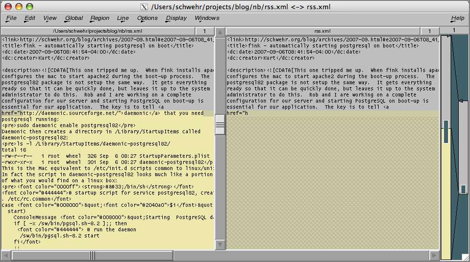
Things seem back to normal for the moment.
09.09.2007 14:07
nagios for fink
I've started working on a nagios
package for fink. I am pretty sure this will not work, but it is a
start at getting all the files into the correctly place. Something
is wrong with the Daemonic setup and I hav not tried to run this,
but everything has to start somewhere 
nagios.info
nagios.info
09.07.2007 11:34
Bought a Evermore SA 320-5HZ GPS
Roland came into my office with a GPS
this morning... for $75 with shipping, this thing is a serial pole
mounted GPS that comes with a USB-to-Serial adapter that will power
the unit and we installed the driver for the USB and I was able to
log data right away (but we were indoors so no real data). The
Evermore SA
320-5HZ outputs position at 5 Hz. Can't wait to get my own unit
and try it out. Just need a more portable logging device than my
laptop!
CP210x USB to UART Bridge VCP Drivers from silabs.com. Installed and rebooted. Then I saw that /dev/tty.SLAB_USBtoUART showed up.
CP210x USB to UART Bridge VCP Drivers from silabs.com. Installed and rebooted. Then I saw that /dev/tty.SLAB_USBtoUART showed up.
./serial_logger.py -p /dev/tty.SLAB_USBtoUART -b 9600 -v opening logfile: log.2007-09-07 $GPRMC,060005.600,V,2400.0000,N,12100.0000,E,,,140207,,*15 $GPRMC,060005.799,V,2400.0000,N,12100.0000,E,,,140207,,*14 $GPGGA,060006.000,2400.0000,N,12100.0000,E,0,00,,,M,,M,,*47 $GPGSA,A,1,,,,,,,,,,,,,,,*1E $GPGSV,1,1,01,04,48,040,00*44 $GPRMC,060006.000,V,2400.0000,N,12100.0000,E,,,140207,,*10 $GPRMC,060006.200,V,2400.0000,N,12100.0000,E,,,140207,,*12 $GPRMC,060006.400,V,2400.0000,N,12100.0000,E,,,140207,,*14 $GPRMC,060006.600,V,2400.0000,N,12100.0000,E,,,140207,,*16 $GPRMC,060006.799,V,2400.0000,N,12100.0000,E,,,140207,,*17 $GPGGA,060007.000,2400.0000,N,12100.0000,E,0,00,,,M,,M,,*46
09.07.2007 08:39
Fall Gardening - the color is just starting
My yard and garden are just beginning
to transition from summer to fall. The colors are really starting
to come out. This flower (named?) was a true white just a few days
ago...
Surprisingly the bees are still out in force. I've seen 4 or 5 types of bees.
This batch of sunflowers really have some great deep colors! Thanks go to Phil for the seeds. Dispite the plants topping them selves, there are probably double the number of flowers ready to open than I've had all summer.
I think I am going to get 3-4 jalapeno peppers before the cold does in these plants. The peppers really like to hide in there. I didn't notice them until they got fairly big.
Will the two mini mellons make it to the point that I can eat them? Too bad my pumpkin vine is in such bad shape. I just might get one or two butternut squash, but I am not holding up my hopes.
The food dryer is doing well. I just tried to dry some beens. Now I have to do a taste test to see if they are worth drying.
Surprisingly the bees are still out in force. I've seen 4 or 5 types of bees.
This batch of sunflowers really have some great deep colors! Thanks go to Phil for the seeds. Dispite the plants topping them selves, there are probably double the number of flowers ready to open than I've had all summer.
I think I am going to get 3-4 jalapeno peppers before the cold does in these plants. The peppers really like to hide in there. I didn't notice them until they got fairly big.
Will the two mini mellons make it to the point that I can eat them? Too bad my pumpkin vine is in such bad shape. I just might get one or two butternut squash, but I am not holding up my hopes.
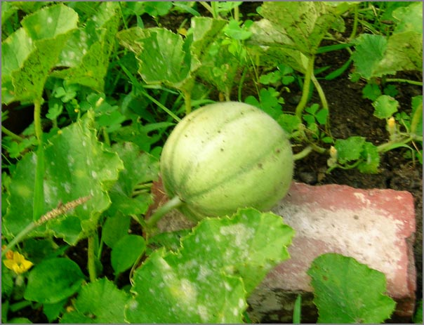
The food dryer is doing well. I just tried to dry some beens. Now I have to do a taste test to see if they are worth drying.
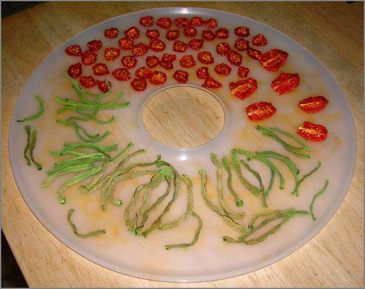
09.06.2007 12:47
AUV workbench
Thanks to Christopher Patty for
pointing me to AUV
Workbench.
It is great to see that AUV workbench uses X3D! (e.g. Savage)
BTW, is anyone else out there thinking about AIS devices for AUV vehicles? People from the USCG, NOAA, UDel (hi Art!), and myself have been talking about what the issues might be and how we might use AIS with these autonomous vehicles. We be another way for everyone to know that there is a vehicle sitting low in the water even if the range would be not good because of the antenna sitting so low in the water. Nobody wants to loose their AUV to a collision and from the other side, nobody wants to run over an AUV if it can be avoided. Plus this is an alternative way to find your vehicle if it is sitting on the surface not exactly where you expected it to be.
It is great to see that AUV workbench uses X3D! (e.g. Savage)
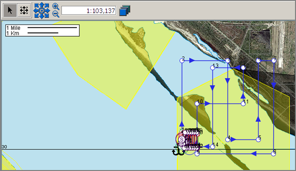
BTW, is anyone else out there thinking about AIS devices for AUV vehicles? People from the USCG, NOAA, UDel (hi Art!), and myself have been talking about what the issues might be and how we might use AIS with these autonomous vehicles. We be another way for everyone to know that there is a vehicle sitting low in the water even if the range would be not good because of the antenna sitting so low in the water. Nobody wants to loose their AUV to a collision and from the other side, nobody wants to run over an AUV if it can be avoided. Plus this is an alternative way to find your vehicle if it is sitting on the surface not exactly where you expected it to be.
09.06.2007 10:35
Global Mapper forum/blog
Global Mapper now has a blog/forum
http://www.globalmapperforum.com/.
Not a program that I have on my computers, but there is a copy of
it in the building.
09.06.2007 08:41
fink - automatically starting postgresql on boot
This one tripped me up. When fink
installs apache2, it also configures the mac to start apache2
during the boot-up process. The postgresql82 package is not setup
the same way. It gets everything ready so that it can be quickly
done, but leaves it up to the system administrator to do this. Rob
and I are working on a complete configuration for our server and
starting PostgreSQL on boot-up is essential for our application.
The key is to tell daemonic that you need
postgresql running:
Daemonic is much like chkconfig that I first discovered on SGI IRIX boxes back in the 90's that has been redone by RedHat.
sudo daemonic enable postgresql82Daemonic then creates a directory in /Library/StartupItems called daemonic-postgresql82:
ls -l /Library/StartupItems/daemonic-postgresql82/ total 16 -rw-r--r-- 1 root wheel 326 Sep 6 08:27 StartupParameters.plist -rwxr-xr-x 1 root wheel 301 Sep 6 08:27 daemonic-postgresql82This is the Mac equivalent to /etc/init.d scripts common to linux/unix. In fact the script in daemonic-postgresql82 looks much like a portion of what you would find on a linux box:
#!/bin/sh
# startup script for service postgresql82, created by daemonic
. /etc/rc.common
case "$1" in
start)
ConsoleMessage "Starting PostgreSQL database server"
if [ -x /sw/bin/pgsql.sh-8.2 ];; then
# run the daemon
/sw/bin/pgsql.sh-8.2 start
fi
;;
esac
exit 0
It is missing the normal stop and restart commands that an init
script would have.Daemonic is much like chkconfig that I first discovered on SGI IRIX boxes back in the 90's that has been redone by RedHat.
09.05.2007 08:01
nagios monitoring
At Val's prompting, he and I sat down
and started working on getting nagios working to monitor some of our
boxes. We used a ubuntu 6.10 box to test out nagios 3.0b3 and the
3_0
quickstart notes. The process was not too bad. BTW, the 2.9
config process is different enough that we went for the 3 beta. No
point in having to relearn something right away!
I think that I should be able to make a fink package for the mac without too much trouble now. We had a few troubles here and there, but worked through them. One was that we want to monitor a box that only provides ssh and it does not respond to pings. The default nagios method to tell if a host is up is to ping it. I had to create a new command to make sure the host is alive.
In commands.cfg:
I think that I should be able to make a fink package for the mac without too much trouble now. We had a few troubles here and there, but worked through them. One was that we want to monitor a box that only provides ssh and it does not respond to pings. The default nagios method to tell if a host is up is to ping it. I had to create a new command to make sure the host is alive.
In commands.cfg:
define command {
command_name check-host-alive-by-ssh
command_line $USER1$/check_ssh -H $HOSTADDRESS
}
Then in the host's config file:
define host{
use linux-server ; Inherit default values from a template
host_name xxx ; The name we're giving to this host
alias xxx ; A longer name associated with the host
address xxx.xxx.xxx.xxx ; IP address of the host
check_command check-host-alive-by-ssh
}
Replace xxx with your host info.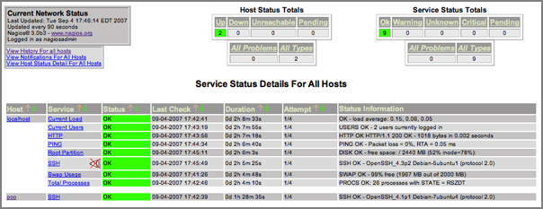
09.05.2007 07:07
EPDIS - Electronic Pilot Display and Information System
This is old news, but I don't think
I've written about this project. The Electronic Pilot Display and
Information System (www.epdis.de) developed an Open Scene
Graph system. From their final report (EPD-PublicReport3-SAM.pdf:
Objectives: The objective of the project is to introduce 3D-4D geo-referenced information systems into maritime navigation to improve safety of passage execution. By the end of this project, EPDIS will have developed the following modules:
Objectives: The objective of the project is to introduce 3D-4D geo-referenced information systems into maritime navigation to improve safety of passage execution. By the end of this project, EPDIS will have developed the following modules:
- Post-processing procedure for Geomatics data
- Geo-referenced data base
- EPDIS application frame executed on top of an electronic chart system
- 3D viewer for virtual reality visualisation of coastal areas and congested waterways
- Interface to shorebased VTMIS for dynamic data
09.04.2007 12:09
Class starts tomorrow - Google Earth in Interactive Data Visualization
Tomorrow is the first day of class
for CS767 - Interactive Data Visualization. I will be teaching the
class for the first month going through creating visualizations
using Google Earth. Then Colin will teach the rest of the course
focusing Human Perception for Information Display.
The class will be Mon & Weds at 12:40-2:00 in CHase Ocean Eng. Bldg Room 130.
Colin's portion has a web page at http://ccom.unh.edu/vislab/VisCourse/
My portion: http://vislab-ccom.unh.edu/~schwehr/Classes/2007VisCourse/ (not much currently there!)
http://www.undergradcat.unh.edu/0708/ug-cs-0708.htm
The class will be Mon & Weds at 12:40-2:00 in CHase Ocean Eng. Bldg Room 130.
Colin's portion has a web page at http://ccom.unh.edu/vislab/VisCourse/
My portion: http://vislab-ccom.unh.edu/~schwehr/Classes/2007VisCourse/ (not much currently there!)
http://www.undergradcat.unh.edu/0708/ug-cs-0708.htm
CS 767 - Interactive Data Visualization Credits: 4.00 Detailed discussion of how an understanding of human perception can help us design better interactive displays of data. Topics include color, space perception, object perception and interactive techniques. Students write interactive programs, give presentations and undertake a project designing and evaluating a novel display technique.
09.03.2007 11:31
Hiking Mount Chocurua
Yesterday, a bunch of us hiked
Mt
Chocurua up in the White Mountains. After having breakfast at
Weeks, we took 16 north to 112 west to the parking lot on the left
about a mile or two after the Gorge parking lot. We started the
hike at 370m.
The trail through the woods was a deep lush green that was dense enough that we could not see to far. Part way up the hill, we stopped for lunch at the pools just above the falls.
Then we went for the rest of the hike up to the peak at 1065m. Not being in shape, this hike was a serious challenge. Especially with some good rock scrambling once we were up out of the trees. I was definitely exhausted when I reached the top, but the view is awesome!
Here is the required group photo at the top. (Not pictured is Anne.)
We did an after hike swim above the Gorge. Wow... cold.
We drove the rest of 112 west to Lincoln for dinner at Mexican restaurant (not on my list of places to repeat) and then headed down 93 to 4 and back home at 11:30 PM. A very full day. Round trip, I drove about 340 km (210 miles).
I just got my first issue of Back Packer Magazine on Friday. When I sat down with the issue and a cup of coffee, I found that the first article talked about hiking the White Mountains!
There was just starting to be hints of autumn colors. I definitely have to repeat this trip in a couple weeks when the colors are farther along.
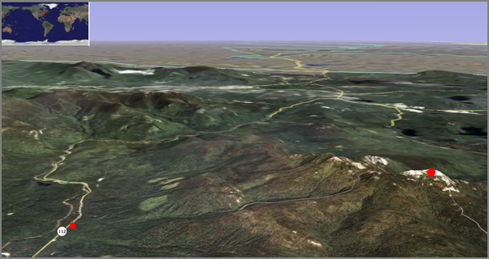
The trail through the woods was a deep lush green that was dense enough that we could not see to far. Part way up the hill, we stopped for lunch at the pools just above the falls.
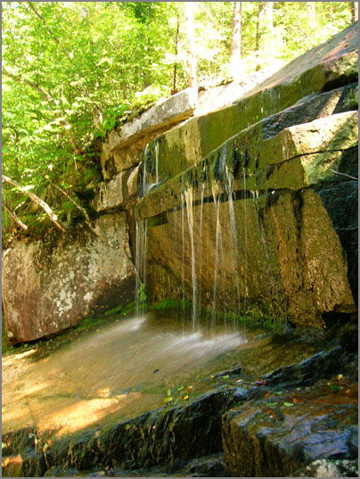
Then we went for the rest of the hike up to the peak at 1065m. Not being in shape, this hike was a serious challenge. Especially with some good rock scrambling once we were up out of the trees. I was definitely exhausted when I reached the top, but the view is awesome!
Here is the required group photo at the top. (Not pictured is Anne.)
We did an after hike swim above the Gorge. Wow... cold.
We drove the rest of 112 west to Lincoln for dinner at Mexican restaurant (not on my list of places to repeat) and then headed down 93 to 4 and back home at 11:30 PM. A very full day. Round trip, I drove about 340 km (210 miles).
I just got my first issue of Back Packer Magazine on Friday. When I sat down with the issue and a cup of coffee, I found that the first article talked about hiking the White Mountains!
There was just starting to be hints of autumn colors. I definitely have to repeat this trip in a couple weeks when the colors are farther along.
09.03.2007 10:55
walking stick insect
Got a little surprise this morning. I
found a walking stick insect (phasmatodea[wikipedia])
this morning. This is a picture with my camera phone, so the color
is a little bit strange. This is the first time I've found one in
the wild (eer... sitting on the outside of a door if you can call
that wild).
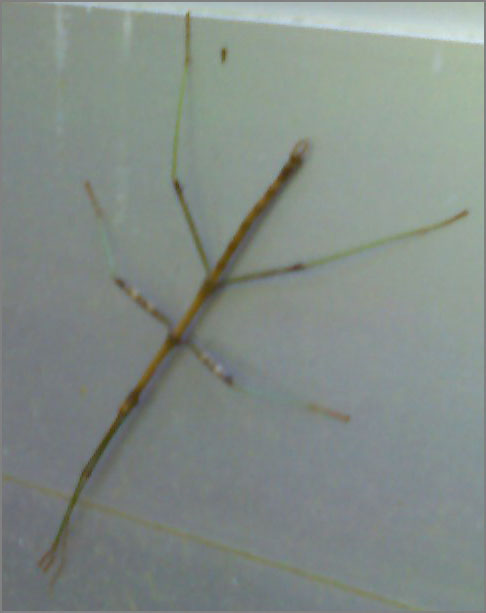
09.01.2007 21:03
JEL datalogger for AIS and waterlevel
Last week, I finally noticed that the
AIS receiver was not returning any data. I drove down to JEL and
found that in mid July, the inline fuse holder for the SR162 had
broken. The fuse was fine, but the plastic gave way. Probably a
combination of UV and heat from sitting in the window sill. I
swapped in the power cord and wall pack from my other AIS receiver
and I think it is back in business (not that it receives much in
the way of VHF traffic.)
The AIS antenna and receiver sit in the window at the top of the building marked with an orange arrow.
Also, here is an image of the data logger box at the end of the pier. Andy M is about to switch it to a buried cable that was placed about two weeks ago.
I really need to get automatic monitoring software in place for these stations. It is a bit hard to know if the AIS station is working without much traffic. I wish the SR162 put out a more frequency AITXT message. I thought about using the statserial command, but the results seem the same when the device is off or on. Perhaps it would be better to check from pyserial in the datalogger?
The AIS antenna and receiver sit in the window at the top of the building marked with an orange arrow.
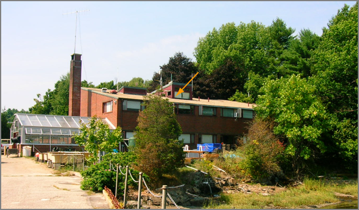
Also, here is an image of the data logger box at the end of the pier. Andy M is about to switch it to a buried cable that was placed about two weeks ago.
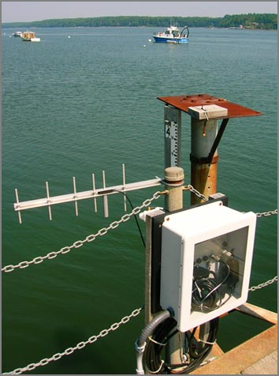
I really need to get automatic monitoring software in place for these stations. It is a bit hard to know if the AIS station is working without much traffic. I wish the SR162 put out a more frequency AITXT message. I thought about using the statserial command, but the results seem the same when the device is off or on. Perhaps it would be better to check from pyserial in the datalogger?
statserial /dev/ttyS2 Device: /dev/ttyS2 Signal Pin Pin Direction Status Full Name (25) (9) (computer) Name =---- --- --- --------- ------ ----- FG 1 - - - Frame Ground TxD 2 3 out - Transmit Data RxD 3 2 in - Receive Data RTS 4 7 out 1 Request To Send CTS 5 8 in 1 Clear To Send DSR 6 6 in 1 Data Set Ready GND 7 5 - - Signal Ground DCD 8 1 in 0 Data Carrier Detect DTR 20 4 out 1 Data Terminal Ready RI 22 9 in 0 Ring IndicatorAfter I fixed the power and the device is back on.
Device: /dev/ttyS2 Signal Pin Pin Direction Status Full Name (25) (9) (computer) Name =---- --- --- --------- ------ ----- FG 1 - - - Frame Ground TxD 2 3 out - Transmit Data RxD 3 2 in - Receive Data RTS 4 7 out 1 Request To Send CTS 5 8 in 1 Clear To Send DSR 6 6 in 1 Data Set Ready GND 7 5 - - Signal Ground DCD 8 1 in 0 Data Carrier Detect DTR 20 4 out 1 Data Terminal Ready RI 22 9 in 0 Ring IndicatorFor completeness, here is the wireless serial device from the tide gauge:
Device: /dev/ttyS1 Signal Pin Pin Direction Status Full Name (25) (9) (computer) Name =---- --- --- --------- ------ ----- FG 1 - - - Frame Ground TxD 2 3 out - Transmit Data RxD 3 2 in - Receive Data RTS 4 7 out 1 Request To Send CTS 5 8 in 0 Clear To Send DSR 6 6 in 0 Data Set Ready GND 7 5 - - Signal Ground DCD 8 1 in 0 Data Carrier Detect DTR 20 4 out 1 Data Terminal Ready RI 22 9 in 0 Ring Indicator